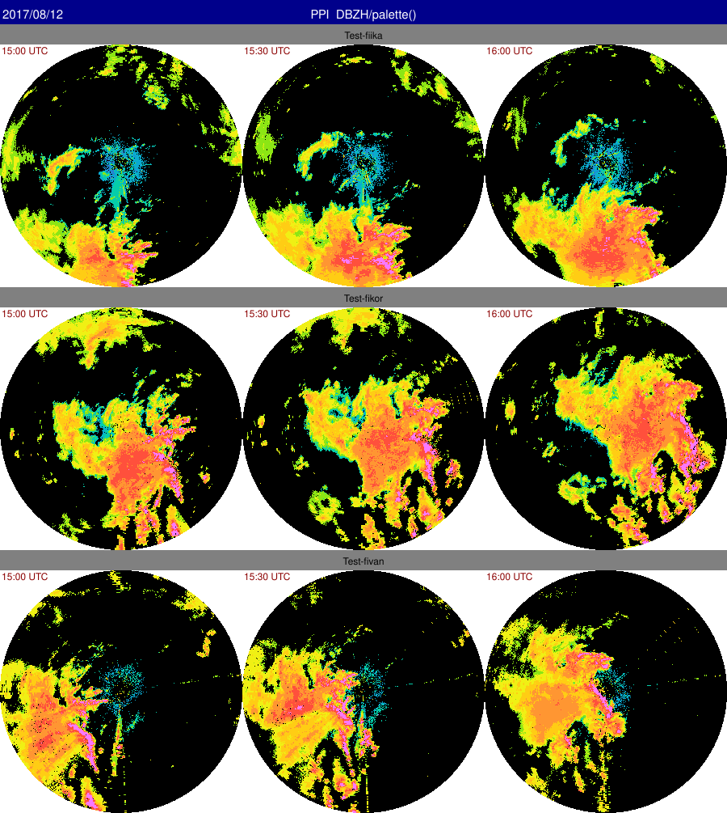
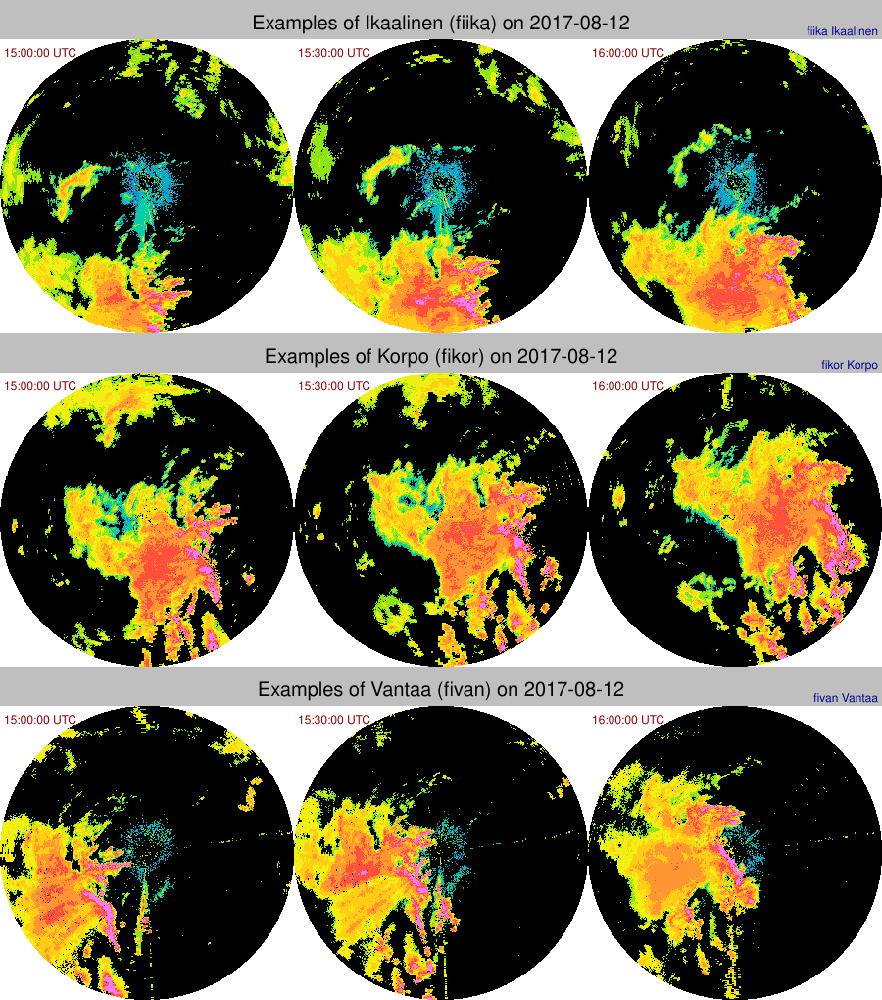

Automatical generation of SVG files
Rack supports presenting generated PNG images collectively using Scalable Vector Graphics (SVG) format.
When executing Rack, all the PNG images that have been written with –outputFile / -o
are included automatically in a simple internal SVG structure. This is neither time nor memory consuming, as the SVG structure itself is lightweight. In addition, some processing - like alignment of elements - only if an SVG file is actually written with –outputFile
Examples of SVG panels
Align two images horizontally (default)
rack --outputPrefix $PWD/out/ --outputConf svg:absolutePaths=true \
volume.h5 --cSize 400 -Q DBZH -c -o gray.png --palette default -o rgb.png \
-o simple.svg
Definition: DataSelector.cpp:44

SVG output 'simple.png'
Also legend outputs (SVG) are included
rack --outputPrefix $PWD/out/ --outputConf svg:absolutePaths=true \
volume.h5 --cSize 400 -Q DBZH -c -o gray.png --palette default -o rgb.png \
--legendOut legend.svg \
-o simple2.svg

SVG output 'simple2.png'
With several inputs, it is handier to use
--script . (See:
Defining scripts .) Output names must be distinct, which is achieved using variables. (See
Formatting metadata output using templates .)
rack --outputPrefix $PWD/out/ --outputConf svg:absolutePaths=
true \
--script '--cReset --cSize 300 -Q DBZH -c --palette "" -o out-${NOD}.png' \
data/pvol_fianj.h5 data/pvol_fikor.h5 data/pvol_fikuo.h5 -o triple1.svg

SVG output 'triple1.png'
Variables identifying the radar and timestamp often distinguish files sufficiently. Hence, consider using variables like
${NOD} ,
${what:date}, and
${what:time} .
Rack supports grouping output images to rows or columns. Use
--cGroup to set a distinguishing key.
rack --outputPrefix $PWD/out/ --outputConf svg:absolutePaths=
true \
--script '--cReset --cSize 300 -Q DBZH -c --palette "" -o out-${what:date}T${what:time}-${NOD}.png' \
--gGroup 'Test-${NOD}' \
data-kiira

SVG output 'series1.png'
In a grid of images, originating from several radars and times, the images can be labelled automatically with
--gTitles command, with option
IMAGE_TITLES .
rack --outputPrefix $PWD/out/ --outputConf svg:absolutePaths=
true \
--script '--cReset --cSize 300 -Q DBZH -c --palette "" -o out-${what:date}T${what:time}-${NOD}.png' \
--gGroup 'Examples of ${PLC} (${NOD}) on ${what:date|%Y/%m/%d}' --gTitles IMAGE_TITLE \
data-kiira

SVG output 'series-labelled.png'
Alignment of the elements is done horizontally or vertically.
rack volume.h5 --pCappi 500 -c -o $PWD/cappi-gray.png --palette
'' -o $PWD/cappi-rgb.png --outputConf svg:absolutePaths=
true -o display-cappi.svg
By default, images are positioned horizontally, from left to right. This can be changed with –outputConf svg , selecting orientation as HORZ or VERT and coordinate direction as increasing (INCR ) or decreasing (DECR ).
group=main ()
max=10 (max per row/column)
title= ()
absolutePaths=false ()
fontSize=12,10,8,6 ()
debug=0 ()
Example:
rack volume.h5 --pCappi 500 -o $PWD/cappi-polar-DBZH.png -c --palette
'' -o $PWD/cappi-rgb.png --outputConf absolutePaths=
true --gLayout orientation=VERT,direction=DECR -o display2-cappi.svg
Example: time series
rack --outputConf svg:absolutePaths=
true --outputPrefix $PWD/ --cSize 300 --script
'-Q DBZH -c --palette "" -o out-${what:date|%Y%m%d}.png' --outputConf svg:group=May data-acc/201705?51200_*.h5 --outputConf svg:group=June data-acc/201706?51200_*.h5 -o time-series.svg
The resulting SVG file can be converted to various other image formats using ImageMagick's convert program, for example. Note that some versions of it require absolute paths in filenames. A good alternative is inkscape .
Note that you can also create SVG files using templates, see Formatting metadata output using templates .
Remark. In future versions:
- the parameters of
–outputConf svg may change.
- title formatting supported (using -c –format )
 1.9.1
1.9.1